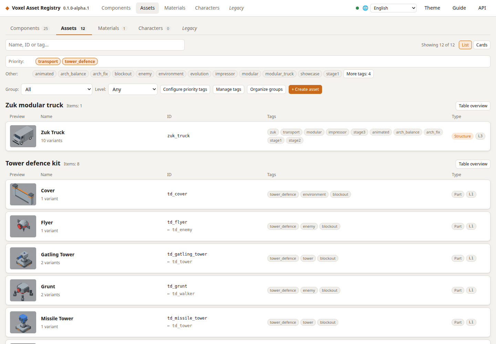
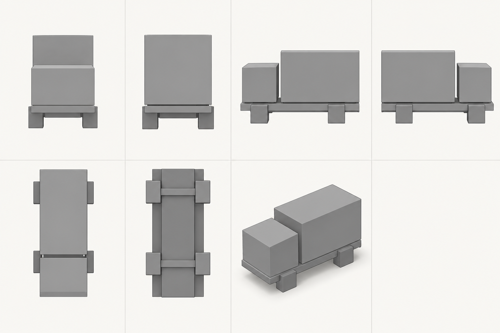
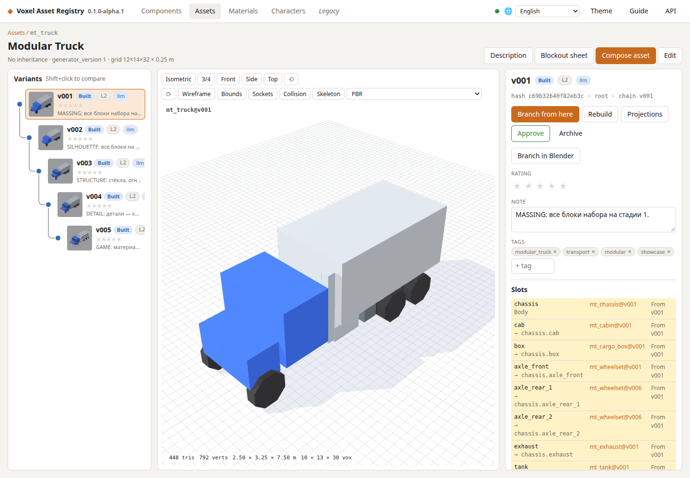
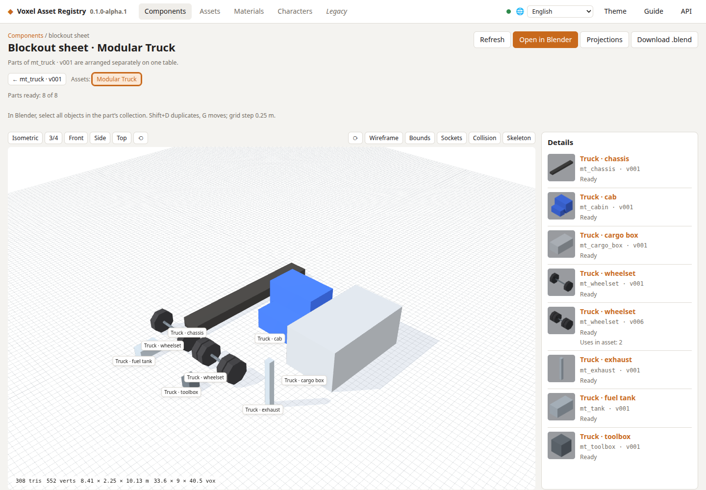
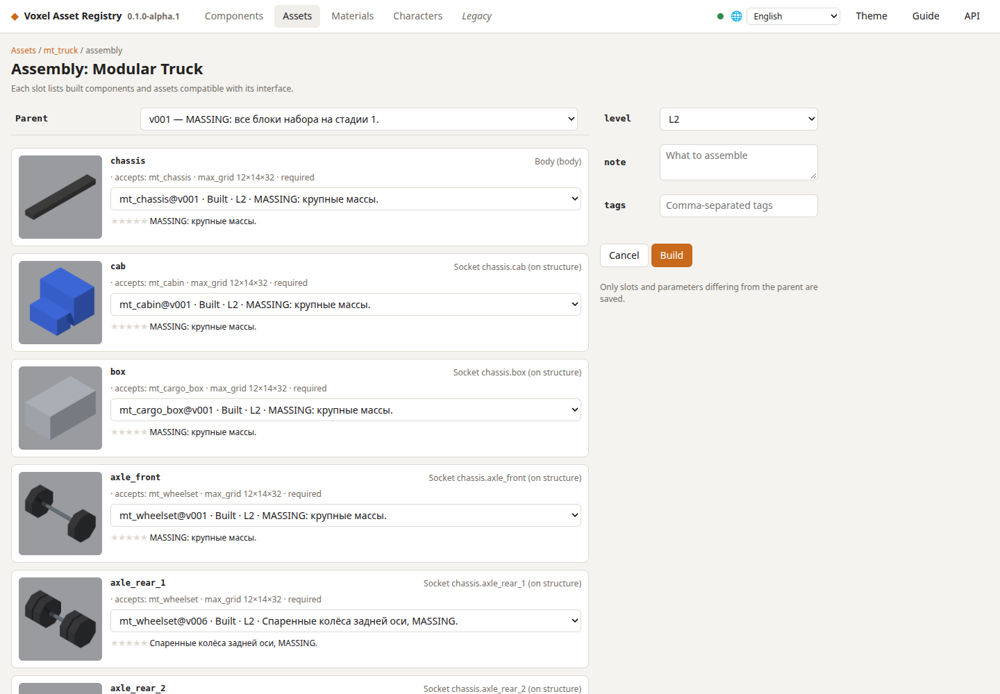
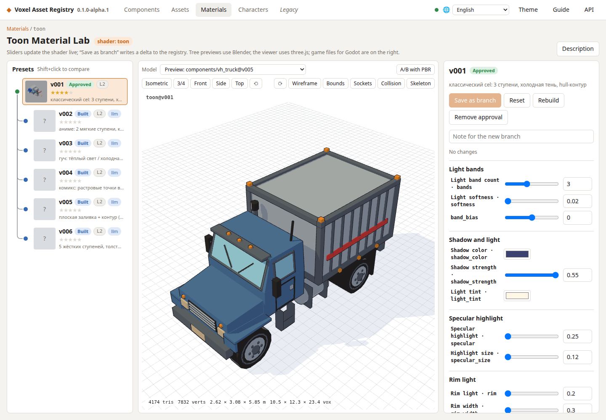

Documentação
Do prompt ao recurso de jogo
Voxel Asset Registry e Impressor · fluxo completo da versão alfa
Comece pela função do objeto e alguns blocos. Escolha a disposição em uma folha de referência, reproduza-a como geometria procedural, confira todos os lados e acrescente apenas formas, estrutura e materiais que melhorem o recurso no jogo.
Uma imagem gerada é uma proposta de design. Dimensões, simetria, sockets e coerência entre vistas só são verificados quando todas as vistas são renderizadas do mesmo modelo 3D real. O Impressor registra essa distinção durante todo o processo.
As capturas mostram a interface em inglês da alfa pública. Escolha seu idioma no aplicativo; os IDs técnicos permanecem iguais.
01Preparar e abrir o Registry
Execute os comandos na raiz do repositório. É preciso Python 3.11+, Blender 5.1+ e Node.js compatível com a versão fixada do Vite: Node 20.19+ ou 22.12+. Defina blender_bin em config.yaml se o Blender não estiver no PATH. A etapa de jogo exige Godot 4.
run.sh cria o ambiente Python, instala dependências e compila a interface quando necessário. A interface normal abre em http://127.0.0.1:8000; o modo de desenvolvimento, em http://127.0.0.1:5173. O registro existente é lido do disco. Não reinicialize sobre trabalho existente.
Executar o aplicativo
./run.shModo de desenvolvimento
./run.sh --devValidar receitas do registro
.venv/bin/python -m registry check
02Escrever o briefing antes de gerar
Descreva um objeto, sua função, a câmera do jogo, dimensões externas em metros e grandes volumes funcionais. Para um caminhão: chassi, cabine, carga e blocos substituindo rodas. Registre escala em relação a um tile ou personagem, contato com o solo, folgas e conexões que devem ficar fixas.
Cada iteração precisa de uma pergunta, alterações permitidas e condição de conclusão. O perfil de estilo define a família; o briefing define a tarefa atual. O YAML do esboço não é uma receita do Registry: _base.md, generator.py e variants/vNNN.yaml continuam sendo os arquivos-fonte do modelo.
Use impressor/templates/sketch_brief.example.yaml para imagens, style_profile.example.yaml para regras da família, generation_brief.example.yaml para modelagem e iteration_review.example.yaml para registrar a revisão. A CLI do Impressor consome apenas o formato de esboços; os demais orientam o agente.
- Descreva a função em uma frase.
- Nomeie cerca de 4–8 grupos de volumes significativos, menos para um componente simples.
- Registre dimensões, eixos, pivô e âncoras preservadas.
- Escolha cube_massing e uma folha de sete vistas para a primeira etapa.
- Decida qual observação justificaria a etapa seguinte.
Briefing para um caminhão de blocos
Impressor: prepare um briefing para um pequeno caminhão de entregas, etapa cube_massing. Função: transporte de carga reconhecível pela câmera isométrica de um RTS. Dimensões externas: 3.0 m de comprimento, 1.25 m de largura e 1.5 m de altura. Volumes: chassi, cabine frontal curta, bloco de carga e quatro blocos para rodas. Pergunta: a proporção entre cabine e carga está clara? Preserve plano do solo, distância entre eixos e dimensões externas. Gere uma folha de sete vistas conforme impressor/PROJECTION_CONTRACT.md.03Usar seis projeções e uma vista em ângulo
A folha padrão mostra frente, trás, esquerda, direita, topo e base em projeção ortográfica, mais uma vista isométrica. Cada painel descreve o mesmo objeto e iteração. Use escala ortográfica comum, orientação fixa, centros alinhados e fundo claro neutro. A vista em ângulo explica o volume sem substituir uma projeção. Uma vista adicional de três quartos pode apoiar a revisão fora do contrato padrão.
Na primeira etapa, cada volume visível é um cubo ou bloco retangular, incluindo substitutos de peças curvas. Use cinza fosco neutro, silhuetas claras e iluminação simples. Exclua cilindros, rodas arredondadas, chanfros, janelas, emendas, parafusos, decalques e texturas até a etapa posterior correspondente.
Peça ao ImageGen para manter quantidade de peças, proporções e conexões em todos os painéis. Revise diferenças: o gerador pode inventar outra parte inferior, mover um eixo ou espelhar uma única vista. Uma folha plausível continua sendo uma proposta, nunca um desenho medido.
A folha final de verificação deve ser renderizada de uma única cena 3D aprovada com câmeras ortográficas. Registre dimensões reais e coordenadas das âncoras no contrato do modelo. Não extraia coordenadas do mundo diretamente dos pixels nem trate rótulos gerados como medidas oficiais.
Ao comparar renders do Registry com a folha Impressor, gire preview_top.png 180 graus: o construtor atual posiciona a frente de modo diferente da convenção Impressor, que exige +Z para o topo da página. A vista traseira se chama preview_back.png e a vista em ângulo preview_iso.png. Esse ajuste de imagem não altera geometria nem eixos registrados.
Folha de referência consistente
Crie uma folha do mesmo caminhão em cube_massing com sete painéis: frente, trás, esquerda, direita, topo, base e isométrico. As seis projeções são ortográficas, na mesma escala e com eixos alinhados. Todas as vistas mantêm exatamente os mesmos volumes, distância entre eixos, altura da cabine, dimensões da carga e conexões. Use apenas blocos retangulares cinza neutro. Sem perspectiva nas seis projeções ou detalhes decorativos. A folha é uma proposta; sinalize divergências entre vistas para verificação 3D.
04Gerar e preservar o esboço
Peça ao agente para gerar a imagem com o ImageGen integrado. O comando local apenas prepara prompt.txt, imagegen_request.json, YAML resolvido e manifest.json; não faz uma requisição de rede nem gera uma imagem sozinho.
Use uma nova pasta para cada iteração. Guarde trabalhos em var/impressor/, excluída do Git. Um exemplo público selecionado pode ficar em impressor/examples/ com prompt e procedência. Após gerar, o agente salva a imagem real e registra o resultado; prepared não significa generated.
Para editar, forneça source_image, uma única change e uma lista explícita preserve. A preparação copia a imagem-fonte para a nova iteração e registra seu hash. Repetir apenas o texto não garante preservar o design aceito.
Preparar a solicitação
.venv/bin/python -m impressor sketch impressor/templates/sketch_brief.example.yaml --out var/impressor/truck_sheet_r001Gerar a solicitação preparada
Crie uma imagem com ImageGen integrado usando var/impressor/truck_sheet_r001/imagegen_request.json. Salve o resultado nessa pasta, preserve o prompt e briefing resolvido e revise os seis painéis ortográficos mais a vista em ângulo conforme o contrato de projeções.Alterar uma proporção
Impressor: edite a folha aceita do caminhão em uma nova iteração. Altere apenas a altura da cabine, reduzindo cerca de 10%. Preserve chassi, distância entre eixos, dimensões da carga, quantidade de peças, conexões, direções de câmera e escala ortográfica comum. Aplique a mesma alteração em todas as vistas. Informe incoerências antes de continuar.05Estudar referências na ferramenta correta
Para folhas geradas de caminhões ou construções, guarde imagens e notas na iteração do Impressor. O Reference Lab atual usa malhas e templates externos de personagens; não é uma tela genérica de upload do ImageGen.
Abra o Reference Lab na seção de Personagens. Escolha fontes à esquerda e um personagem do Registry à direita. Compare lado a lado, sobreposição, silhueta ou aramado; examine os modos Solid, Wireframe, Normals, Armature e Weights. Use câmeras frontal, lateral, traseira e 3/4.
Referências importadas são fontes de estudo. Confira permissões e procedência antes de criar derivados ou templates públicos de produção. Importar uma malha não a transforma em recurso exportado para o jogo.
Importar referência de personagem
.venv/bin/python -m registry reference import /path/to/reference.blend --id my_reference06Reproduzir a proposta como blockout de cubos
Antes de escrever geometria, procure funções reutilizáveis nos catálogos de Componentes e Recursos. Reproduza a disposição aceita com dimensões reais, âncoras e apenas blocos. Não acrescente detalhes para compensar proporções erradas.
A interface do Registry usa metros e eixos glTF/Godot: Y para cima e frente em +Z. O Blender usa Z para cima. Leia cada esquema de parâmetros: alguns legados usam contagens de voxels em vez de metros. Âncoras estruturais usam grade de 0.25 m; âncoras de detalhe, 0.0625 m.
Um componente é uma função reutilizável com interface, não um componente por cubo. Defina envelope máximo, pivô no centro inferior, montagens e sockets compatíveis. Derive posições de limites, faces, regiões e portas do hospedeiro para que parâmetros não quebrem a estrutura.
As variantes mt_truck ilustram refinamento procedural, mas suas rodas iniciais já têm curvas. Não demonstram uma primeira etapa estritamente de cubos. Crie um novo rascunho para testar esse fluxo.
Criar o primeiro rascunho procedural
Crie um novo rascunho procedural cube_massing do caminhão a partir da proposta aceita de sete vistas. Liste primeiro componentes reutilizados, volumes, dimensões e relações de âncoras. Use apenas blocos, inclusive rodas; sem detalhes ou animação. Resolva contradições com dimensões numéricas e uma única disposição 3D coerente. Preserve solo e distância entre eixos. Escreva uma nova variante com author: llm e status: draft. Execute registry check, compile e revise relatório, todas as projeções renderizadas e a vista isométrica.
07Revisar a folha de componentes e as projeções reais
Um recurso pode oferecer uma folha de blockout dos componentes. Abra Folha de blocagem (Folha de blockout) na página do recurso. As peças aparecem separadas em uma mesa comum, usando suas variantes quando disponíveis. Isso ajuda a conferir proporções e planejar reutilização.
Use Gerar детали (Compilar peças) se faltarem modelos. Abrir no Blender (Abrir no Blender) prepara a mesa; Criar projeções (Criar projeções) gera seis vistas. Se existirem, Projeções (Projeções) rola até elas. Baixar .blend (Baixar .blend) fica disponível após preparar.
No Blender, selecione todos os objetos da coleção de uma peça; Shift+D duplica e G move. A folha mostra o passo de encaixe. Posicionar livremente na mesa é um estudo: a receita de uma montagem procedural aceita ainda precisa declarar sockets, hospedeiros e âncoras relativas reais.
Em uma variante, Criar projeções (Criar projeções) recompila se faltarem as seis imagens; Projeções (Projeções) abre a área quando completas. Compare frente/trás, esquerda/direita e topo/base junto da isometria. Confira apoios, interseções, assimetria e geometria inferior.

08Refinar silhueta e componentes reutilizáveis
Avance por cube_massing, silhouette, structure e detail quando a decisão anterior estiver clara. Use cunhas, cilindros e chanfros onde melhorarem reconhecimento ou construção. Preserve envelope e âncoras; mudar apoios ou montagem exige uma ramificação estrutural separada.
Teste valores nominais, pequenos e grandes, além de combinações arriscadas: apoio estreito com balanço grande, repetições máximas na largura mínima ou alturas extremas. Um parâmetro válido isoladamente não comprova todas as combinações.
Registry level vai de 0–3: blockout, silhueta, detalhe e animação. blockout.Plan.stage vai de 1–5: massa, forma, estrutura, detalhe e destaque. As etapas do Impressor não atribuem nenhuma escala automaticamente. Animação exige nós, pivôs e folgas de movimento explícitos; examine o ciclo completo.
Etapa de silhueta
Refine o caminhão de cubos aceito em um rascunho de silhueta. Altere apenas geometria que melhore reconhecimento: perfil da cabine e forma das rodas. Preserve envelope numérico, distância entre eixos, carga, solo, sockets e âncoras estruturais. Mantenha cinza neutro e sem detalhes pequenos. Compare os modelos em seis direções e pela câmera do jogo; salve uma nova variante filha.Componente reutilizável
Projete um módulo de apoio reutilizável para esta família. Confira componentes existentes e defina função, envelope máximo, pivô, montagens, sockets, peças e relações. Comece com blocos e derive geometria de limites e âncoras do hospedeiro. Teste valores nominais, mínimos, máximos e apoio estreito com balanço máximo. Apresente verificações, seis projeções e prévia isométrica antes de detalhar.09Montar o recurso com módulos compatíveis
Comece com um volume principal, uma característica funcional dominante, até duas secundárias e áreas deliberadamente simples. Sockets vazios são permitidos. Um socket possibilita conexão; não obriga a ocupar cada ponto disponível.
O grafo de montagem nomeia hospedeiros, sockets e componentes compatíveis. Sockets aninhados, como frame.gear_a, pertencem ao componente daquele slot. Confira max_grid, slots obrigatórios, larguras de passagem, contato e folgas de movimento.
A página de composição escolhe pai, variantes compatíveis, parâmetros, nível, nota e tags. Gerar (Montar) cria uma nova variante do recurso e coloca a compilação na fila. Revise o conjunto: componentes bons isoladamente podem formar uma silhueta confusa.
Montar um recurso da família
Monte uma oficina compacta com componentes existentes compatíveis do perfil de estilo escolhido. Mostre primeiro blocos: um volume principal, uma função dominante, no máximo dois destaques secundários e entrada clara. Preserve área ocupada e passagem. Substitua os blocos por módulos usando sockets e âncoras declarados. Deixe sockets não usados vazios, remova anexos desnecessários, compile um rascunho novo e compare sete vistas e câmera do jogo com a variante anterior.
10Compilar e revisar o resultado real
Valide receitas e depois compile a variante escolhida. build mostra a pasta build/<hash>. Leia report.json: status geral, verificações, problemas estruturais, composição e estatísticas. Se falhar, examine build.log antes de alterar geometria sem relação com o problema.
Confira preview_iso.png, preview_front.png e preview_top.png; gere ou abra as demais projeções na interface. Verifique envelope, pivô, paleta, geometria, sockets, apoios e orçamento de polígonos quando aplicável. Relatório verde é uma etapa técnica, não aprovação visual.
Revise o recurso na distância real da câmera do jogo, junto de objetos vizinhos e personagem ou tile de referência. Pequenos detalhes, sombras e destaques de materiais podem parecer diferentes da visualização próxima no navegador.
- Corrija primeiro contrato, geometria inválida e falhas de apoio.
- Compare seis vistas ortográficas e a vista em ângulo do mesmo modelo compilado.
- Confira a silhueta na câmera do jogo e em miniatura.
- Registre problemas observados separados das causas propostas.
- Avance quando a pergunta da etapa atual estiver respondida.
Validar e compilar um exemplo existente
.venv/bin/python -m registry check
.venv/bin/python -m registry build assets/mt_truck/v00111Aplicar materiais quando a forma funcionar
O projeto já tem cores nomeadas, propriedades de superfície, presets e texturas albedo/ORM geradas. O Material Lab edita sombreamento toon de um modelo compilado, compara variantes ou PBR e salva mudanças como uma nova ramificação de materiais.
Use a paleta atual e parâmetros declarados pelo componente. Mantenha geometria e câmera ao comparar acabamentos. Controles ajustam faixas de luz, sombra, realces, luz de borda, retícula e contornos. Salvar como ramificação (Salvar como ramificação) grava um delta de material, não uma nova malha.
Cor e superfície física ainda estão acopladas em partes do fluxo. SurfaceMaterial por função, AssetLook e ligações ampliadas de desgaste/texturas são propostas do plano de materiais, não controles atuais. Baixar roughness sozinho não deixa uma janela transparente.
Confirme o acabamento na prévia do Blender, no visualizador Three.js e no Godot. Registre diferenças intencionais entre renderizadores sem pressupor pixels idênticos.
Estudo de materiais com recursos atuais
Prepare dois acabamentos para o modelo aceito usando apenas sua paleta e parâmetros declarados: inspeção neutra e acabamento industrial discreto. Preserve geometria, âncoras e câmera. Confira corpo fosco, ferragens metálicas, rodas e janelas com presets existentes. Compare PBR e toon e verifique o escolhido no Godot. Aponte propriedades solicitadas que o formato não expressa; não invente campos de material incompatíveis.
12Exportar e revisar no Godot
Exporte uma variante compilada para um projeto Godot existente. Troque o caminho pela sua pasta. export-godot copia GLB e metadados; variantes de materiais têm um caminho próprio para shaders/materiais Godot. Copiar arquivos com sucesso não comprova toda a integração.
Abra a cena e confira escala em metros, orientação +Z, pivô, solo, materiais, silhueta e animação quando houver. Verifique folgas durante o movimento e compare com objetos vizinhos.
godot-check se concentra atualmente em rig, skin, clips e escala de personagens. Não substitui conferir caminhão ou prédio na cena. A cena de jogo é a etapa final de aceitação.
Exportar o exemplo de caminhão compilado
.venv/bin/python -m registry export-godot /path/to/godot_project assets/mt_truck/v00113Salvar cada decisão como uma nova iteração
Crie um novo vNNN.yaml com parent, menor alteração útil, author: llm, status: draft e nota significativa. Componentes usam delta; recursos usam slots alterados e params_delta. Preserve a receita anterior. Uma pessoa atribui approved após revisar. O agente não altera fontes manuais .blend; comece de um ancestral procedural.
Registre briefing, versão do estilo, imagens de entrada, prompt final, ferramenta/modelo de imagem quando conhecido, revisão ou cópia do código, paleta, versões de ferramentas, referências de variantes, hashes, caminhos de relatórios e todas as vistas revisadas. O hash atual não captura integralmente cada dependência externa.
Após cada etapa, escolha refine, advance, rollback ou ramificação estrutural. Se duas correções focadas não resolverem o posicionamento, volte ao volume, âncora ou região hospedeira. Decoração não corrige uma relação quebrada.
Ao alterar generator.py ou seu blender.py associado, incremente generator_version. Mudanças no construtor compartilhado exigem BUILDER_VERSION; bibliotecas de personagens têm regras adicionais. Registre as versões na iteração para não confundir artefatos antigos com o resultado novo.
- Descreva o problema observado em uma vista específica.
- Escolha uma causa a testar e liste alterações permitidas.
- Explicite dimensões, interfaces e decisões aceitas.
- Gere ou compile nova iteração e repita as mesmas vistas de revisão.
- Registre a decisão e a próxima pergunta; remova detalhes sem utilidade.
Uma correção procedural focada
Crie um novo rascunho filho da última variante procedural aceita. Problema: a cabine parece alta demais na câmera do jogo. Altere apenas sua altura dentro do intervalo declarado. Preserve distância entre eixos, carga, sockets, contato com o solo e materiais. Compile, compare vistas sincronizadas, examine seis projeções, isometria e câmera do jogo e registre se funcionou.14Checklist de aceitação e documentos-fonte
Uma iteração útil tem propósito claro, um modelo 3D coerente, seis projeções e vista em ângulo, dimensões e âncoras explícitas, receitas válidas, verificações aplicáveis e revisão na câmera do jogo. A primeira etapa usa estritamente blocos. A geometria posterior deve responder à pergunta atual.
Marque a folha como proposta até verificar sua geometria. Vistas geradas podem divergir; resolva no contrato numérico e renderize novamente do modelo. Não alegue reconstrução precisa usando apenas uma imagem.
As regras completas estão em CLAUDE.md, impressor/PROJECTION_CONTRACT.md, impressor/BLOCKOUT_PRACTICES.md, impressor/REFERENCE_ITERATION.md, impressor/ASSET_ITERATION.md e impressor/SKETCH_GENERATION.md. Planos de código aberto, localização e materiais ficam em docs/. Este guia descreve a alfa atual; recursos futuros continuam marcados como planos.
- Briefing e estilo versionado salvos.
- Todos os painéis descrevem a mesma iteração; divergências documentadas.
- Projeções reais renderizadas do mesmo modelo aceito.
- Dimensões, grade, eixos, pivô, âncoras e sockets explícitos.
- Relatório técnico e revisões visual e no jogo completos.
- Resultado salvo como novo rascunho com procedência e próxima decisão.
Glossário
- Blockout
- Modelo espacial simples para testar função, dimensões e composição antes de detalhar.
- Proposta de referência
- Imagem gerada ou coletada para explorar design; não é geometria verificada.
- Projeção verificada
- Imagem ortográfica do modelo 3D aceito com eixos e escala conhecidos.
- Componente
- Função procedural reutilizável com parâmetros, envelope, pivô, montagens e sockets.
- Recurso
- Composição de variantes compatíveis conectadas por slots e sockets declarados.
- Variante
- Receita versionada que herda de um pai e registra alterações como delta.
- Impressor
- Templates de tarefas, regras de iteração e compilador local de prompts; o agente invoca ImageGen integrado.